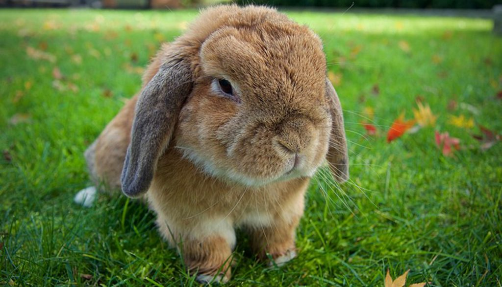
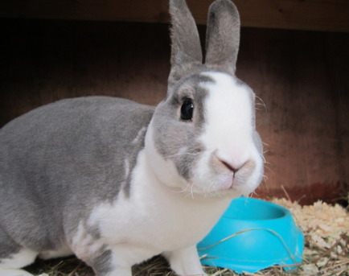
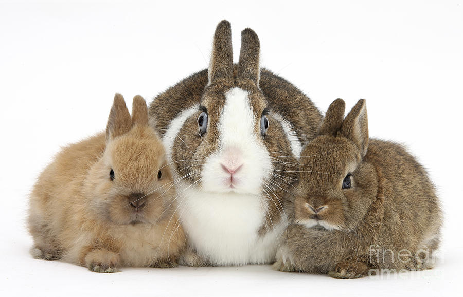
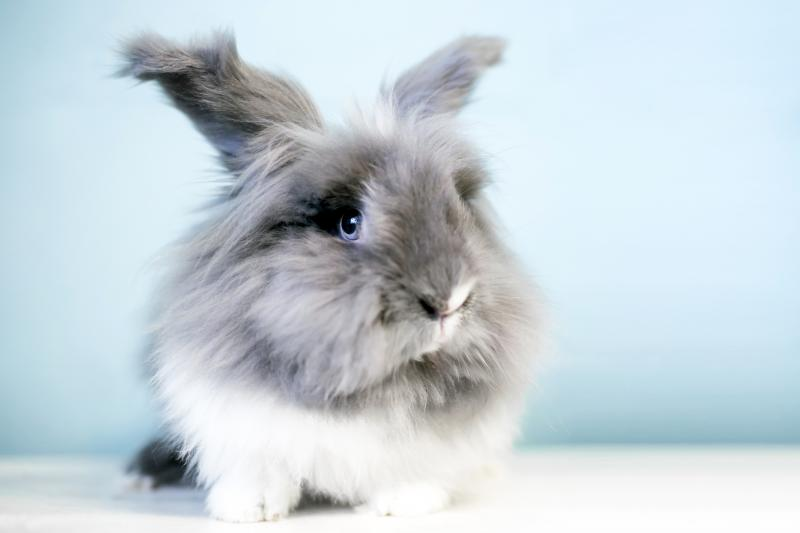

- 
Holland Lops are small-sized rabbits known for their floppy ears. They have a compact body and a friendly temperament, making them popular as pets.
- 
Mini Rex rabbits are small to medium-sized rabbits known for their plush and velvety fur. They have a compact body and come in various colors. They are favored as both pets and show rabbits.
- 
Netherland Dwarfs are one of the smallest rabbit breeds. They have a compact body and short ears, and they come in a variety of colors. They are popular as pets due to their small size and adorable appearance.
- 
Lionhead rabbits are characterized by their distinctive mane of long fur around their head, which gives them a lion-like appearance. They have a small to medium-sized body and are known for their friendly and sociable nature.